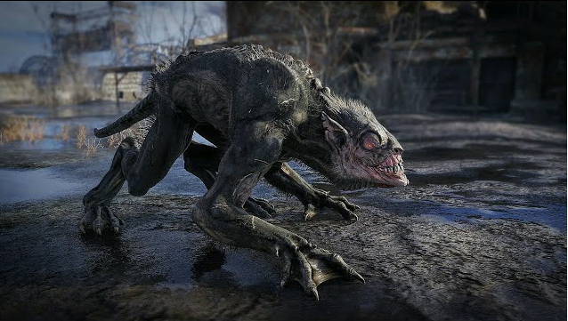

СТРАЖИ
Стайные охотники на пустошах России.
Стражи с их вывернутыми суставами, страшными когтями и желтыми зубами - самые распространенные обитатели постапокалиптической России. Эти свирепые мутанты собираются в стаи и могут подкараулить вас на улице или в тоннеле. Одиночный страж не представляет особой опасности для обученного спартанца, но их часовые сразу же вызовут подкрепление, если вы быстро и тихо их не прикончите...